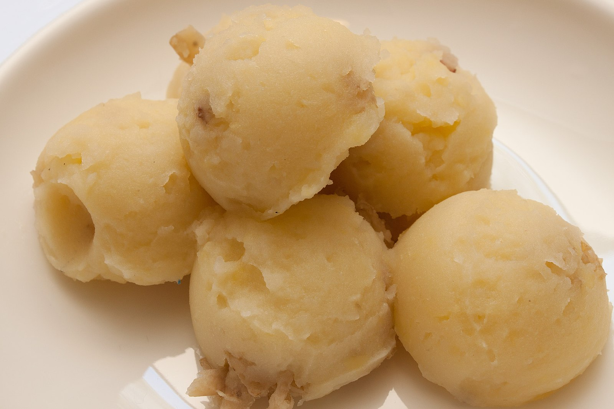

Mashed Potatoes

Description
Mashed potatoes are a cult classic. Potatoes can be eaten in many different forms, and mashed is one of the most favored way to eat them
Ingredients
Potatoes
Milk
Salt and pepper
Butter
Steps
Cut and boil potatoes
Prepare garlic butter mixture
Dry potatoes
Start mashing potatoes while mixing in butter mixture
Season with salt and pepper to taste